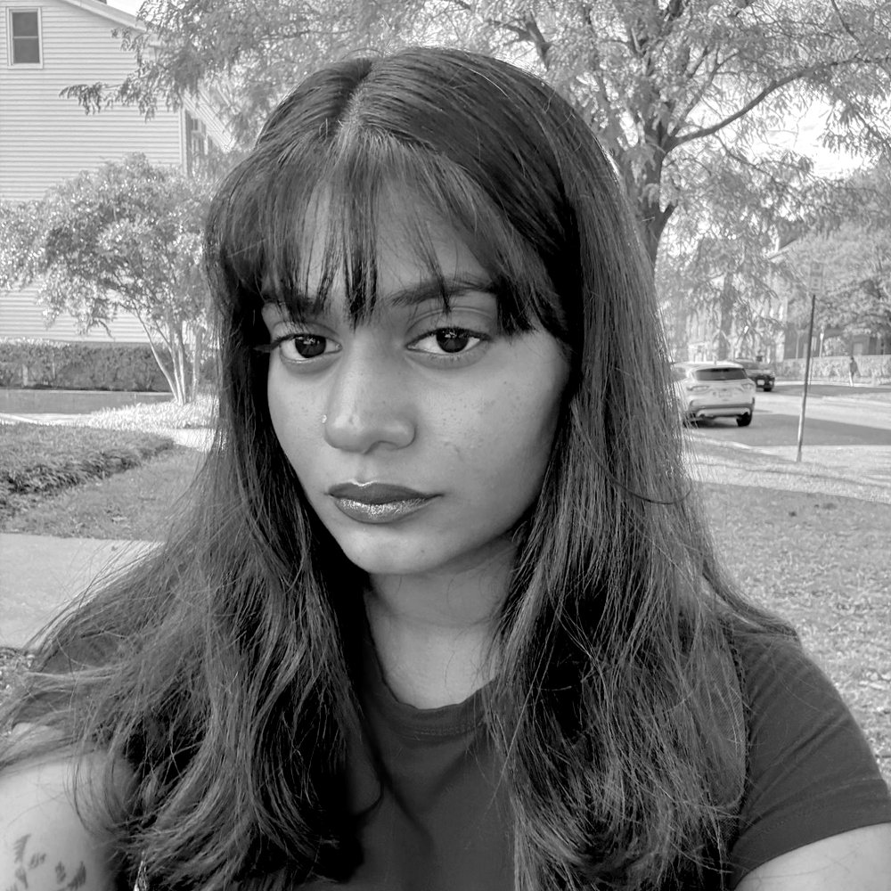

lifewithisha.com
Isha Deo
Copywriter & creative strategist
A new portfolio is brewing. Reels, campaigns and results from 3+ years and 40+ brands, landing here soon. Until then, say hi or grab my résumé.

lifewithisha.com
Copywriter & creative strategist
A new portfolio is brewing. Reels, campaigns and results from 3+ years and 40+ brands, landing here soon. Until then, say hi or grab my résumé.